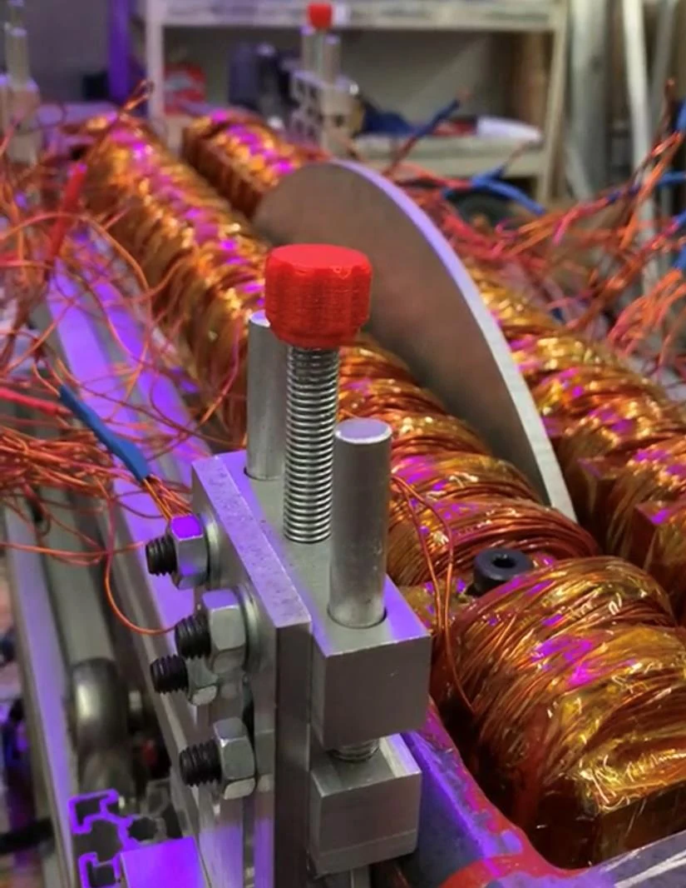
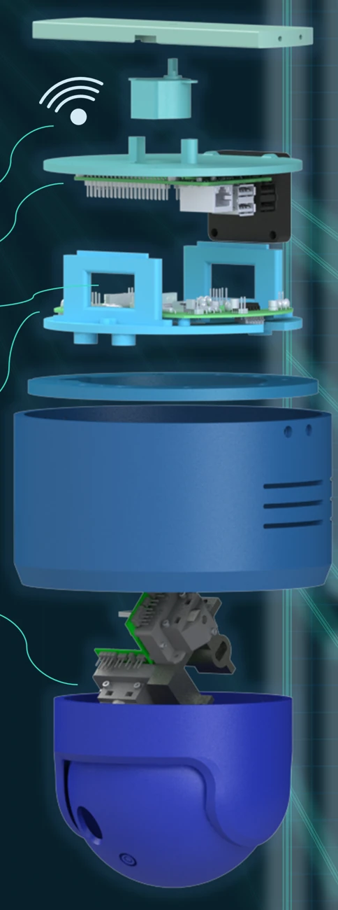
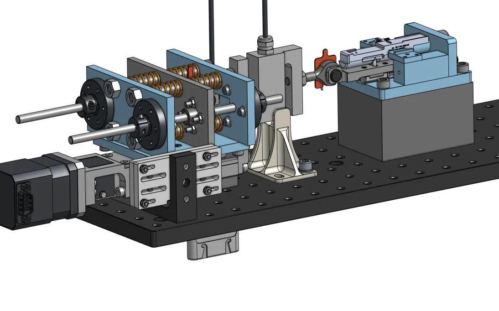

Cobionix July 2025–present
Mechanical, electrical, and software prototyping for an autonomous mobile robot platform.
Engineering / Portfolio
From first principles
to working prototypes.
Mechanical design. Embedded systems.
Computer vision. A little of everything.

02 / TEST SYSTEMS
01 / BRIGHTSPOT FIELD NOTES 03
DESIGN → BUILD → TEST ↗ OPEN THE COLLECTIONMechanical, electrical, and software prototyping for an autonomous mobile robot platform.
Developed a multi-axis precision metrology fixture from feasibility and error analysis through assembly and testing, targeting micron-level repeatability. Designed production-ready sheet metal using GD&T and tolerance stack analysis.
Designed and validated an automated force-sensor calibration fixture, reducing calibration time by approximately 90%.
Designed and fabricated a flywheel-based motor test rig with adjustable mounting, instrumentation, and pneumatic braking.
BASc in Mechatronics Engineering, Dean’s Honours · May 2025
Exchange studies in Robotics and Control Systems · February 2024
The collection / 01—07